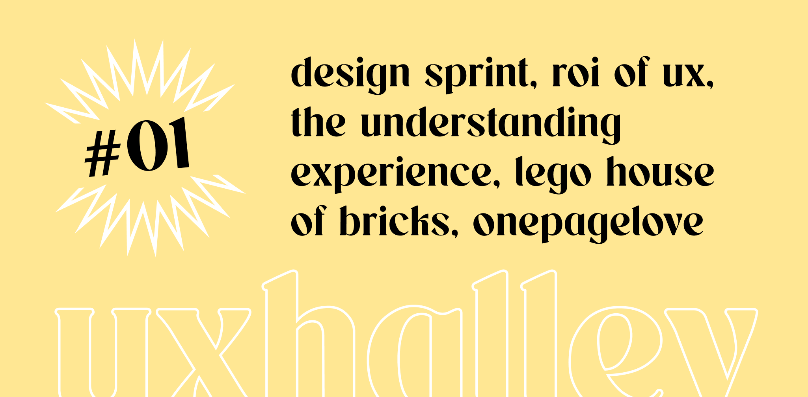

UX Halley, newsletter per designer
uxhalley, edizione uno
10 ottobre 2022 — UX Halley, il primo avvistamento: una newsletter bisettimanale che raccoglie news e links utili sulla UX. Un progetto in gemellaggio con il libro The UX North Star e il file con +500 risorse chiamato UX Antimateria. Con questa edizione inauguro un appuntamento ricorrente destinato a persone che vivono la user experience: aspiranti, junior, middle, senior o semplicemente persone curiose ed appassionate della materia. Le regole sono semplici: 5 minuti di lettura per link utili e news dal mondo della UX. Se ti interessa, lo approfondisci. Se ti piace, lo condividi. Facile facile.
Immagine di copertina dell'edizione di UX Halley, newsetter per designer
Link per designer suggerito nell'edizione di UX Halley, newsletter per designer
progettare per la virtual reality
Una guida per progettare in Figma un contenuto per VR e testarlo con un visore senza aver bisogno di scrivere codice. La cosa interessante di questo articolo è che si tratta quasi di una micro-lezione di VR e della progettazione di UI per un nuovo tipo di fruizione di contenuti, con dinamiche specifiche e pattern totalmente nuovi). Inoltre ha anche un file Figma di riferimento molto utile!
Link per designer suggerito nell'edizione di UX Halley, newsletter per designer
repository di landing page
Spesso trovare l'ispirazione per il visual di un progetto è complesso, specie se si tratta di situazioni in cui aspetti come il branding sono poco chiari e definiti. In questo link sono raccolte centinaia di esempi di landing page e siti web ad una pagina, dal quale si può trarre ispirazione.
Link per designer suggerito nell'edizione di UX Halley, newsletter per designer
calcolare il ROI della ux
Uno dei dialoghi sempre caldi e mai conclusi nell'ambito UX e business: quanto vale investire in UX? ma soprattutto, si può calcolare un reale ritorno sugli investimenti per ogni euro speso in queste attività? In questo articolo molto interessante ci sono alcune risposte a queste domande.
Link per designer suggerito nell'edizione di UX Halley, newsletter per designer
lego house: home of the bricks
Anche tu hai una passione smisurata, quasi incontrollata, per i mattoncini Lego? Che poi, si dice i lego o le lego? Non lo sapremo mai. Se te lo sei perso, qui trovi un documentario che racconta molti aspetti di Lego e della casa-museo che è stata costruita a Billund, in Danimarca.
Link per designer suggerito nell'edizione di UX Halley, newsletter per designer
understanding experience
Stefano Dominici ha scritto questo libro che personalmente mi sento di consigliare, parte della collezione UXUniversity. Citando la sua descrizione "Un libro per ispirare, questo è Understanding Experience, per imparare a conoscere lo Human-Centered Design in modo semplice e diretto. Non un manuale su come fare le cose, ma una guida illustrata per chi vuole comprendere il potenziale di questo approccio per poterlo introdurre nella propria organizzazione o per chi si avvicina al mondo dello Human-Centered Design..."
Link per designer suggerito nell'edizione di UX Halley, newsletter per designer
design sprint kit by google
Quando si tratta di design thinking, metodologie, facilitazione, workshop e sfumature utili, nonché consigli pratici, nel mondo della UX, c'è sicuramente sempre da imparare a prescindere dalla propria esperienza. Google in questa raccolta ha condensato decine di articoli, metodi, materiali, canvas e tante altre cose carine, rese disponibili gratuitamente per la rete. Perché perdersele?
Link per designer suggerito nell'edizione di UX Halley, newsletter per designer
project fun show
Progettare il coinvolgimento delle persone è una delle più grandi sfide di ogni designer. Al netto dei classici libri in materia ci sono tantissime iniziative che parlano dell'argomento, su formati più fruibili e sicuramente diversi dallo stampato, che sono di altissima qualità. Uno tra questi, che seguo da tempo, è ProjectFun Show: consiglio di ascoltare i loro podcast!